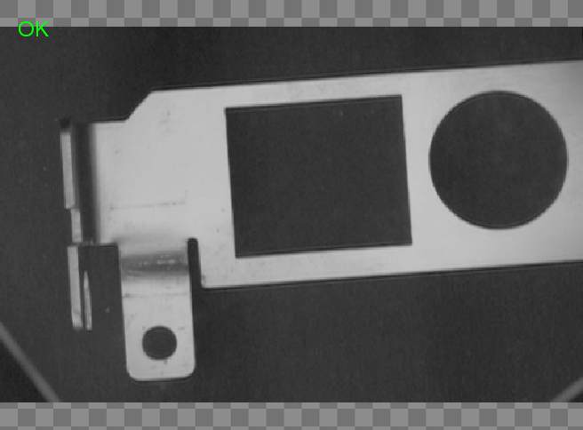
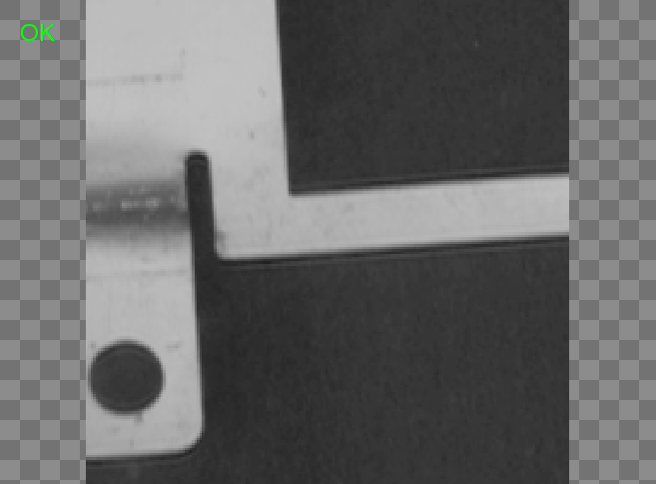
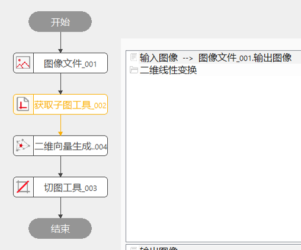
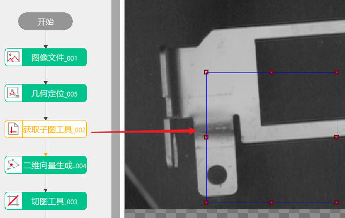
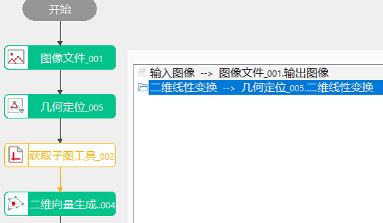
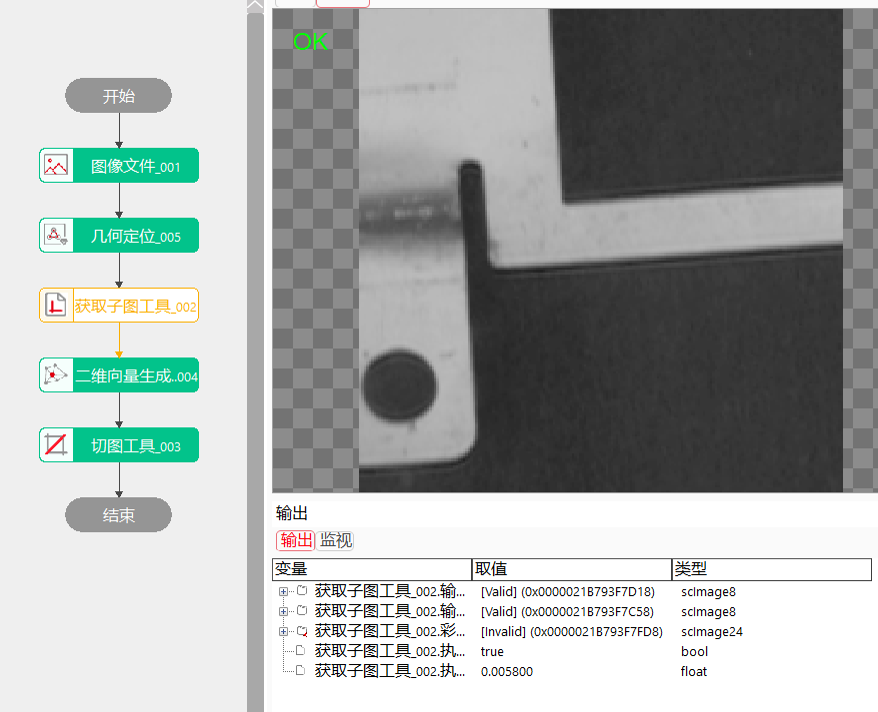

Thực hiện lấy ảnh con từ ảnh đầu vào, có thể cắt ra vùng chỉ định trong ảnh đầu vào để xuất ra, nhằm trích xuất vùng cụ thể trong ảnh.
Khi cần cắt và trích xuất ảnh đầu vào, công cụ lấy ảnh con sẽ được sử dụng. Như hình dưới:
Ảnh đầu vào:

Ảnh kết quả:

Việc lấy ảnh con là cắt vùng hình chữ nhật đã được thiết lập trong ảnh đầu vào để tạo ra ảnh đầu ra.




| Mô tả hiện tượng | Phương pháp giải quyết |
|---|---|
| Không có dữ liệu ảnh trong khu vực lỗi | Kiểm tra xem chuỗi dữ liệu đã liên kết ảnh chưa, và dữ liệu ảnh có bình thường không |
| Ảnh kết quả bất thường | Kiểm tra chuỗi dữ liệu có liên kết điểm trung tâm không; nếu có thì kiểm tra công cụ tạo điểm trung tâm có xuất đúng điểm không |
| Khu vực lỗi báo điểm trung tâm không hợp lệ, không được vượt quá phạm vi ảnh | Điểm trung tâm đã vượt quá phạm vi ảnh, kiểm tra có liên kết sai ảnh thuộc tính không |
| Tên tham số | Giải thích tham số |
|---|---|
| Ảnh đầu vào | Ảnh con sẽ được cắt ra từ ảnh đầu vào, liên kết qua chuỗi dữ liệu. |
| Kích thước ảnh cố định | Xác định ảnh có kích thước cố định hay không. Nếu chọn “Có”, chiều rộng và chiều cao ảnh phải nhập tay; nếu chọn “Không”, kích thước ảnh phụ thuộc vào vùng đã thiết lập, không cần nhập tay. |
| Chiều rộng ảnh | Khi kích thước ảnh cố định, có thể chỉnh sửa, thiết lập chiều rộng ảnh. |
| Chiều cao ảnh | Khi kích thước ảnh cố định, có thể chỉnh sửa, thiết lập chiều cao ảnh. |
| Vùng hình chữ nhật | X là tọa độ X của góc trên bên trái hình chữ nhật, Y là tọa độ Y, W là chiều rộng, H là chiều cao của vùng hình chữ nhật. |
| Có phải ảnh màu không | Chọn “Có” thì hỗ trợ lấy ảnh con từ ảnh màu, có thể liên kết ảnh màu trong chuỗi dữ liệu. |
| Ảnh màu đầu vào | Khi chọn là ảnh màu, ảnh con sẽ được cắt từ ảnh màu, liên kết qua chuỗi dữ liệu. |
| Tên tham số | Giải thích tham số |
|---|---|
| Ảnh đầu vào | Kích thước ảnh con lấy được, dùng cho chuỗi dữ liệu. |
| Ảnh đầu ra | Ảnh con được xuất ra. |
| Ảnh màu đầu ra | Khi chọn là ảnh màu, xuất ảnh con cắt từ ảnh màu. |
| Kết quả thực thi | Kết quả thực thi của công cụ. |
| Thời gian thực thi | Thời gian công cụ thực thi. |
参见“\Samples\获取子图工具.gvp”。